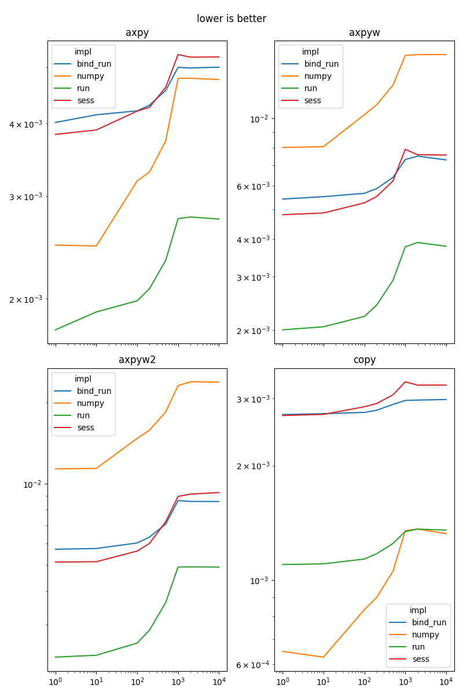
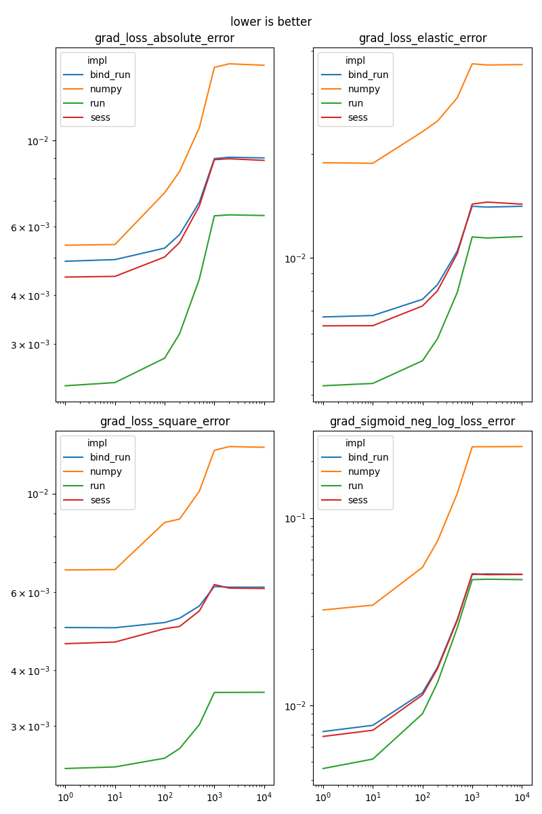
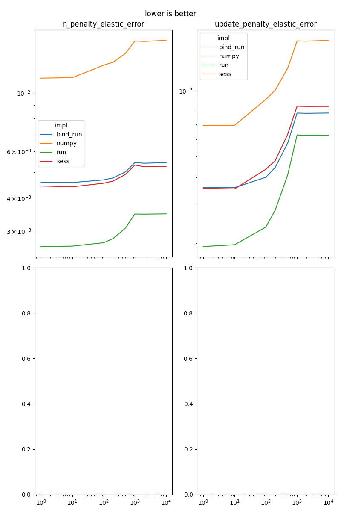

Note
Click here to download the full example code
Compares numpy to onnxruntime on simple functions¶
onnxruntime can be used a replacement to numpy.
It can be used to implement a training algorithm,
onnxruntime-training differentiate an onnx graph and
runs it to compute the gradient. Simple functions are implemented
in ONNX and ran with onnxruntime to update the weights.
function_onnx_graph returns many
functions used to implement a training algorithm.
The following benchmarks compares a couple of implementations:
numpy: an implementation based on numpy, not optimized
sess: inference through an ONNX graph executed with method onnxruntime.InferenceSession.run
bind: inference through an ONNX graph executed with method onnxruntime.InferenceSession.run_with_iobinding
run: inference through an ONNX graph executed with method onnxruntime.InferenceSession.run_with_iobinding but without counting the binding assuming input buffers are reused and do not need binding again
axpy¶
This function implements .
import numpy
from scipy.special import expit
import pandas
from tqdm import tqdm
from cpyquickhelper.numbers.speed_measure import measure_time
import matplotlib.pyplot as plt
from onnxruntime import InferenceSession
from onnxruntime.capi._pybind_state import ( # pylint: disable=E0611
SessionIOBinding, OrtDevice as C_OrtDevice,
OrtValue as C_OrtValue)
from mlprodict.plotting.text_plot import onnx_simple_text_plot
from onnxcustom.utils.onnx_function import function_onnx_graph
fct_onx = function_onnx_graph("axpy")
print(onnx_simple_text_plot(fct_onx))
Out:
opset: domain='' version=14
input: name='X1' type=dtype('float32') shape=()
input: name='X2' type=dtype('float32') shape=()
input: name='alpha' type=dtype('float32') shape=(1,)
Mul(X1, alpha) -> Mu_C0
Add(Mu_C0, X2) -> Y
output: name='Y' type=dtype('float32') shape=()
The numpy implementation is the following.
fct_numpy = lambda X1, X2, alpha: X1 * alpha + X2
The benchmark
def reshape(a, dim):
if len(a.shape) == 2:
return a[:dim].copy()
return a
def bind_and_run(sess, bind, names, args, out_names, device):
for n, a in zip(names, args):
bind.bind_ortvalue_input(n, a)
for o in out_names:
bind.bind_output(o, device)
sess.run_with_iobinding(bind, None)
return bind.get_outputs()
def nobind_just_run(sess, bind):
sess.run_with_iobinding(bind, None)
def benchmark(name, onx, fct_numpy, *args,
dims=(1, 10, 100, 200, 500, 1000, 2000, 10000)):
sess = InferenceSession(onx.SerializeToString())
device = C_OrtDevice(
C_OrtDevice.cpu(), C_OrtDevice.default_memory(), 0)
names = [i.name for i in sess.get_inputs()]
out_names = [o.name for o in sess.get_outputs()]
if len(names) != len(args):
raise RuntimeError(
"Size mismatch %d != %d." % (len(names), len(args)))
rows = []
for dim in tqdm(dims):
new_args = [reshape(a, dim) for a in args]
ortvalues = [
C_OrtValue.ortvalue_from_numpy(a, device)
for a in new_args]
ms = measure_time(lambda: fct_numpy(*new_args),
repeat=50, number=100)
ms.update(dict(name=name, impl='numpy', dim=dim))
rows.append(ms)
inps = {n: a for n, a in zip(names, new_args)}
ms = measure_time(lambda: sess.run(None, inps))
ms.update(dict(name=name, impl='sess', dim=dim))
rows.append(ms)
bind = SessionIOBinding(sess._sess)
ms = measure_time(
lambda: bind_and_run(
sess._sess, bind, names, ortvalues, out_names, device))
ms.update(dict(name=name, impl='bind_run', dim=dim))
rows.append(ms)
ms = measure_time(
lambda: nobind_just_run(sess._sess, bind))
ms.update(dict(name=name, impl='run', dim=dim))
rows.append(ms)
return rows
Back to function axpy.
rows = benchmark(
'axpy', fct_onx, fct_numpy,
numpy.random.randn(1000, 10).astype(numpy.float32),
numpy.random.randn(1000, 10).astype(numpy.float32),
numpy.array([0.5], dtype=numpy.float32))
all_rows = []
all_rows.extend(rows)
piv = pandas.DataFrame(rows).pivot('dim', 'impl', 'average')
piv
Out:
0%| | 0/8 [00:00<?, ?it/s]
12%|#2 | 1/8 [00:00<00:01, 4.46it/s]
25%|##5 | 2/8 [00:00<00:01, 4.42it/s]
38%|###7 | 3/8 [00:00<00:01, 4.07it/s]
50%|##### | 4/8 [00:00<00:01, 3.88it/s]
62%|######2 | 5/8 [00:01<00:00, 3.62it/s]
75%|#######5 | 6/8 [00:01<00:00, 3.23it/s]
88%|########7 | 7/8 [00:02<00:00, 3.02it/s]
100%|##########| 8/8 [00:02<00:00, 2.90it/s]
100%|##########| 8/8 [00:02<00:00, 3.29it/s]
Graph.
name = rows[0]['name']
ax = piv.plot(logx=True, logy=True)
ax.set_title(name + "\nlower is better")
Out:
Text(0.5, 1.0, 'axpy\nlower is better')
axpyw¶
It does where and .
fct_onx = function_onnx_graph("axpyw")
print(onnx_simple_text_plot(fct_onx))
Out:
opset: domain='' version=14
input: name='X1' type=dtype('float32') shape=()
input: name='X2' type=dtype('float32') shape=()
input: name='G' type=dtype('float32') shape=()
input: name='alpha' type=dtype('float32') shape=(1,)
input: name='beta' type=dtype('float32') shape=(1,)
Mul(X1, alpha) -> Mu_C0
Mul(G, beta) -> Mu_C02
Add(Mu_C0, Mu_C02) -> Z
Add(Z, X2) -> Y
output: name='Y' type=dtype('float32') shape=()
output: name='Z' type=dtype('float32') shape=()
benchmark
fct_numpy = lambda x1, x2, g, alpha, beta: (
x1 * alpha + x2 + beta * g, x1 * alpha + beta * g)
rows = benchmark(
'axpyw', fct_onx, fct_numpy,
numpy.random.randn(1000, 10).astype(numpy.float32),
numpy.random.randn(1000, 10).astype(numpy.float32),
numpy.random.randn(1000, 10).astype(numpy.float32),
numpy.array([0.5], dtype=numpy.float32),
numpy.array([0.5], dtype=numpy.float32))
all_rows.extend(rows)
piv = pandas.DataFrame(rows).pivot('dim', 'impl', 'average')
piv
Out:
0%| | 0/8 [00:00<?, ?it/s]
12%|#2 | 1/8 [00:00<00:03, 1.90it/s]
25%|##5 | 2/8 [00:01<00:03, 1.89it/s]
38%|###7 | 3/8 [00:01<00:02, 1.71it/s]
50%|##### | 4/8 [00:02<00:02, 1.59it/s]
62%|######2 | 5/8 [00:03<00:02, 1.44it/s]
75%|#######5 | 6/8 [00:04<00:01, 1.25it/s]
88%|########7 | 7/8 [00:05<00:00, 1.15it/s]
100%|##########| 8/8 [00:06<00:00, 1.10it/s]
100%|##########| 8/8 [00:06<00:00, 1.28it/s]
Graph.
name = rows[0]['name']
ax = piv.plot(logx=True, logy=True)
ax.set_title(name + "\nlower is better")
Out:
Text(0.5, 1.0, 'axpyw\nlower is better')
axpyw2¶
It implements where and .
fct_onx = function_onnx_graph("axpyw2")
print(onnx_simple_text_plot(fct_onx))
Out:
opset: domain='' version=14
input: name='X1' type=dtype('float32') shape=()
input: name='X2' type=dtype('float32') shape=()
input: name='G' type=dtype('float32') shape=()
input: name='alpha' type=dtype('float32') shape=(1,)
input: name='beta' type=dtype('float32') shape=(1,)
Mul(X1, alpha) -> Mu_C0
Mul(G, beta) -> Mu_C03
Add(Mu_C0, Mu_C03) -> Z
Mul(Z, beta) -> Mu_C02
Add(Mu_C0, Mu_C02) -> Ad_C0
Add(Ad_C0, X2) -> Y
output: name='Y' type=dtype('float32') shape=()
output: name='Z' type=dtype('float32') shape=()
benchmark
fct_numpy = lambda x1, x2, g, alpha, beta: (
x1 * alpha + x2 + beta * (x1 * alpha + beta * g),
x1 * alpha + beta * g)
rows = benchmark(
'axpyw2', fct_onx, fct_numpy,
numpy.random.randn(1000, 10).astype(numpy.float32),
numpy.random.randn(1000, 10).astype(numpy.float32),
numpy.random.randn(1000, 10).astype(numpy.float32),
numpy.array([0.5], dtype=numpy.float32),
numpy.array([0.5], dtype=numpy.float32))
all_rows.extend(rows)
piv = pandas.DataFrame(rows).pivot('dim', 'impl', 'average')
piv
Out:
0%| | 0/8 [00:00<?, ?it/s]
12%|#2 | 1/8 [00:00<00:04, 1.42it/s]
25%|##5 | 2/8 [00:01<00:04, 1.42it/s]
38%|###7 | 3/8 [00:02<00:03, 1.27it/s]
50%|##### | 4/8 [00:03<00:03, 1.18it/s]
62%|######2 | 5/8 [00:04<00:02, 1.06it/s]
75%|#######5 | 6/8 [00:05<00:02, 1.09s/it]
88%|########7 | 7/8 [00:07<00:01, 1.20s/it]
100%|##########| 8/8 [00:08<00:00, 1.27s/it]
100%|##########| 8/8 [00:08<00:00, 1.07s/it]
copy¶
It implements a copy.
fct_onx = function_onnx_graph("copy")
print(onnx_simple_text_plot(fct_onx))
Out:
opset: domain='' version=15
input: name='X' type=dtype('float32') shape=()
Identity(X) -> Y
output: name='Y' type=dtype('float32') shape=()
benchmark
fct_numpy = lambda x: x.copy()
rows = benchmark(
'copy', fct_onx, fct_numpy,
numpy.random.randn(1000, 10).astype(numpy.float32))
all_rows.extend(rows)
piv = pandas.DataFrame(rows).pivot('dim', 'impl', 'average')
piv
Out:
0%| | 0/8 [00:00<?, ?it/s]
12%|#2 | 1/8 [00:00<00:00, 9.82it/s]
25%|##5 | 2/8 [00:00<00:00, 9.80it/s]
38%|###7 | 3/8 [00:00<00:00, 9.28it/s]
50%|##### | 4/8 [00:00<00:00, 8.91it/s]
62%|######2 | 5/8 [00:00<00:00, 8.43it/s]
75%|#######5 | 6/8 [00:00<00:00, 7.76it/s]
88%|########7 | 7/8 [00:00<00:00, 7.38it/s]
100%|##########| 8/8 [00:01<00:00, 7.18it/s]
100%|##########| 8/8 [00:01<00:00, 7.89it/s]
Graph.
name = rows[0]['name']
ax = piv.plot(logx=True, logy=True)
ax.set_title(name + "\nlower is better")
Out:
Text(0.5, 1.0, 'copy\nlower is better')
grad_loss_absolute_error¶
It implements .
fct_onx = function_onnx_graph("grad_loss_absolute_error")
print(onnx_simple_text_plot(fct_onx))
Out:
opset: domain='' version=14
input: name='X1' type=dtype('float32') shape=(0, 0)
input: name='X2' type=dtype('float32') shape=(0, 0)
init: name='Re_Reshapecst' type=dtype('int64') shape=(1,) -- array([-1])
Sub(X1, X2) -> Su_C0
Sign(Su_C0) -> Y_grad
Abs(Su_C0) -> Ab_Y0
ReduceSum(Ab_Y0) -> Re_reduced0
Reshape(Re_reduced0, Re_Reshapecst) -> Y
output: name='Y' type=dtype('float32') shape=()
output: name='Y_grad' type=dtype('float32') shape=()
benchmark
fct_numpy = lambda x1, x2: (
numpy.abs(x1 - x2).sum(), numpy.sign(x1 - x2))
rows = benchmark(
'grad_loss_absolute_error', fct_onx, fct_numpy,
numpy.random.randn(1000, 10).astype(numpy.float32),
numpy.random.randn(1000, 10).astype(numpy.float32))
all_rows.extend(rows)
piv = pandas.DataFrame(rows).pivot('dim', 'impl', 'average')
piv
Out:
0%| | 0/8 [00:00<?, ?it/s]
12%|#2 | 1/8 [00:00<00:02, 2.56it/s]
25%|##5 | 2/8 [00:00<00:02, 2.55it/s]
38%|###7 | 3/8 [00:01<00:02, 2.26it/s]
50%|##### | 4/8 [00:01<00:01, 2.04it/s]
62%|######2 | 5/8 [00:02<00:01, 1.74it/s]
75%|#######5 | 6/8 [00:03<00:01, 1.38it/s]
88%|########7 | 7/8 [00:04<00:00, 1.21it/s]
100%|##########| 8/8 [00:05<00:00, 1.12it/s]
100%|##########| 8/8 [00:05<00:00, 1.41it/s]
Graph.
name = rows[0]['name']
ax = piv.plot(logx=True, logy=True)
ax.set_title(name + "\nlower is better")
Out:
Text(0.5, 1.0, 'grad_loss_absolute_error\nlower is better')
grad_loss_square_error¶
It implements  .
.
fct_onx = function_onnx_graph("grad_loss_square_error")
print(onnx_simple_text_plot(fct_onx))
Out:
opset: domain='' version=14
input: name='X1' type=dtype('float32') shape=(0, 0)
input: name='X2' type=dtype('float32') shape=(0, 0)
init: name='Mu_Mulcst' type=dtype('float32') shape=(1,) -- array([1.], dtype=float32)
init: name='Re_Reshapecst' type=dtype('int64') shape=(1,) -- array([-1])
init: name='Mu_Mulcst1' type=dtype('float32') shape=(1,) -- array([-2.], dtype=float32)
Sub(X1, X2) -> Su_C0
Mul(Su_C0, Mu_Mulcst1) -> Y_grad
ReduceSumSquare(Su_C0) -> Re_reduced0
Mul(Re_reduced0, Mu_Mulcst) -> Mu_C0
Reshape(Mu_C0, Re_Reshapecst) -> Y
output: name='Y' type=dtype('float32') shape=()
output: name='Y_grad' type=dtype('float32') shape=()
benchmark
fct_numpy = lambda x1, x2: (
((x1 - x2) ** 2).sum(), (x1 - x2) * (-2))
rows = benchmark(
'grad_loss_square_error', fct_onx, fct_numpy,
numpy.random.randn(1000, 10).astype(numpy.float32),
numpy.random.randn(1000, 10).astype(numpy.float32))
all_rows.extend(rows)
piv = pandas.DataFrame(rows).pivot('dim', 'impl', 'average')
piv
Out:
0%| | 0/8 [00:00<?, ?it/s]
12%|#2 | 1/8 [00:00<00:03, 2.17it/s]
25%|##5 | 2/8 [00:00<00:02, 2.16it/s]
38%|###7 | 3/8 [00:01<00:02, 1.97it/s]
50%|##### | 4/8 [00:02<00:02, 1.88it/s]
62%|######2 | 5/8 [00:02<00:01, 1.74it/s]
75%|#######5 | 6/8 [00:03<00:01, 1.54it/s]
88%|########7 | 7/8 [00:04<00:00, 1.43it/s]
100%|##########| 8/8 [00:05<00:00, 1.37it/s]
100%|##########| 8/8 [00:05<00:00, 1.57it/s]
Graph.
name = rows[0]['name']
ax = piv.plot(logx=True, logy=True)
ax.set_title(name + "\nlower is better")
Out:
Text(0.5, 1.0, 'grad_loss_square_error\nlower is better')
grad_loss_elastic_error¶
It implements or
if
weight_name is not None and its gradient.
l1_weight is  and
l2_weight is
and
l2_weight is  .
.
fct_onx = function_onnx_graph("grad_loss_elastic_error")
print(onnx_simple_text_plot(fct_onx))
Out:
opset: domain='' version=15
input: name='X1' type=dtype('float32') shape=(0, 0)
input: name='X2' type=dtype('float32') shape=(0, 0)
init: name='Mu_Mulcst' type=dtype('float32') shape=(1,) -- array([0.01], dtype=float32)
init: name='Re_Reshapecst' type=dtype('int64') shape=(1,) -- array([-1])
init: name='Mu_Mulcst3' type=dtype('float32') shape=(1,) -- array([-0.02], dtype=float32)
Identity(Mu_Mulcst) -> Mu_Mulcst1
Identity(Mu_Mulcst) -> Mu_Mulcst2
Sub(X1, X2) -> Su_C0
Mul(Su_C0, Mu_Mulcst3) -> Mu_C05
Sign(Su_C0) -> Si_output0
Mul(Si_output0, Mu_Mulcst2) -> Mu_C04
Add(Mu_C04, Mu_C05) -> Ad_C02
Identity(Ad_C02) -> Y_grad
Mul(Su_C0, Su_C0) -> Mu_C03
Mul(Mu_C03, Mu_Mulcst1) -> Mu_C02
Abs(Su_C0) -> Ab_Y0
Mul(Ab_Y0, Mu_Mulcst) -> Mu_C0
Add(Mu_C0, Mu_C02) -> Ad_C0
ReduceSum(Ad_C0) -> Re_reduced0
Reshape(Re_reduced0, Re_Reshapecst) -> Y
output: name='Y' type=dtype('float32') shape=()
output: name='Y_grad' type=dtype('float32') shape=()
benchmark
fct_numpy = lambda x1, x2: (
numpy.abs(x1 - x2).sum() * 0.1 + ((x1 - x2) ** 2).sum() * 0.9,
numpy.sign(x1 - x2) * 0.1 - 2 * 0.9 * (x1 - x2))
rows = benchmark(
'grad_loss_elastic_error', fct_onx, fct_numpy,
numpy.random.randn(1000, 10).astype(numpy.float32),
numpy.random.randn(1000, 10).astype(numpy.float32))
all_rows.extend(rows)
piv = pandas.DataFrame(rows).pivot('dim', 'impl', 'average')
piv
Out:
0%| | 0/8 [00:00<?, ?it/s]
12%|#2 | 1/8 [00:01<00:07, 1.12s/it]
25%|##5 | 2/8 [00:02<00:06, 1.12s/it]
38%|###7 | 3/8 [00:03<00:06, 1.23s/it]
50%|##### | 4/8 [00:05<00:05, 1.33s/it]
62%|######2 | 5/8 [00:06<00:04, 1.48s/it]
75%|#######5 | 6/8 [00:09<00:03, 1.74s/it]
88%|########7 | 7/8 [00:11<00:01, 1.90s/it]
100%|##########| 8/8 [00:13<00:00, 2.00s/it]
100%|##########| 8/8 [00:13<00:00, 1.69s/it]
Graph.
name = rows[0]['name']
ax = piv.plot(logx=True, logy=True)
ax.set_title(name + "\nlower is better")
Out:
Text(0.5, 1.0, 'grad_loss_elastic_error\nlower is better')
n_penalty_elastic_error¶
It implements  l1_weight is and
l2_weight is .
It does that for n_tensors and adds all of the results
to an input loss.
l1_weight is and
l2_weight is .
It does that for n_tensors and adds all of the results
to an input loss.
fct_onx = function_onnx_graph("n_penalty_elastic_error")
print(onnx_simple_text_plot(fct_onx))
Out:
opset: domain='' version=15
input: name='loss' type=dtype('float32') shape=(1, 1)
input: name='W0' type=dtype('float32') shape=()
init: name='Mu_Mulcst' type=dtype('float32') shape=(1,) -- array([0.01], dtype=float32)
init: name='Re_Reshapecst' type=dtype('int64') shape=(1,) -- array([-1])
Abs(W0) -> Ab_Y0
ReduceSum(Ab_Y0) -> Re_reduced0
Mul(Re_reduced0, Mu_Mulcst) -> Mu_C0
ReduceSumSquare(W0) -> Re_reduced02
Identity(Mu_Mulcst) -> Mu_Mulcst1
Mul(Re_reduced02, Mu_Mulcst1) -> Mu_C02
Add(Mu_C0, Mu_C02) -> Ad_C01
Add(loss, Ad_C01) -> Ad_C0
Reshape(Ad_C0, Re_Reshapecst) -> Y
output: name='Y' type=dtype('float32') shape=(0,)
benchmark
fct_numpy = lambda loss, x: numpy.abs(x).sum() * 0.1 + ((x) ** 2).sum() * 0.9
rows = benchmark(
'n_penalty_elastic_error', fct_onx, fct_numpy,
numpy.array([[0.5]], dtype=numpy.float32),
numpy.random.randn(1000, 10).astype(numpy.float32))
all_rows.extend(rows)
piv = pandas.DataFrame(rows).pivot('dim', 'impl', 'average')
piv
Out:
0%| | 0/8 [00:00<?, ?it/s]
12%|#2 | 1/8 [00:00<00:04, 1.45it/s]
25%|##5 | 2/8 [00:01<00:04, 1.45it/s]
38%|###7 | 3/8 [00:02<00:03, 1.38it/s]
50%|##### | 4/8 [00:02<00:02, 1.34it/s]
62%|######2 | 5/8 [00:03<00:02, 1.28it/s]
75%|#######5 | 6/8 [00:04<00:01, 1.20it/s]
88%|########7 | 7/8 [00:05<00:00, 1.16it/s]
100%|##########| 8/8 [00:06<00:00, 1.13it/s]
100%|##########| 8/8 [00:06<00:00, 1.22it/s]
Graph.
name = rows[0]['name']
ax = piv.plot(logx=True, logy=True)
ax.set_title(name + "\nlower is better")
Out:
Text(0.5, 1.0, 'n_penalty_elastic_error\nlower is better')
update_penalty_elastic_error¶
It implements
l1 is and
l2 is .
fct_onx = function_onnx_graph("update_penalty_elastic_error")
print(onnx_simple_text_plot(fct_onx))
Out:
opset: domain='' version=14
input: name='X' type=dtype('float32') shape=()
init: name='Mu_Mulcst' type=dtype('float32') shape=(1,) -- array([0.9998], dtype=float32)
init: name='Mu_Mulcst1' type=dtype('float32') shape=(1,) -- array([1.e-04], dtype=float32)
Mul(X, Mu_Mulcst) -> Mu_C0
Sign(X) -> Si_output0
Mul(Si_output0, Mu_Mulcst1) -> Mu_C02
Sub(Mu_C0, Mu_C02) -> Y
output: name='Y' type=dtype('float32') shape=()
benchmark
fct_numpy = lambda x: numpy.sign(x) * 0.1 + (x * 0.9 * 2)
rows = benchmark(
'update_penalty_elastic_error', fct_onx, fct_numpy,
numpy.random.randn(1000, 10).astype(numpy.float32))
all_rows.extend(rows)
piv = pandas.DataFrame(rows).pivot('dim', 'impl', 'average')
piv
Out:
0%| | 0/8 [00:00<?, ?it/s]
12%|#2 | 1/8 [00:00<00:03, 2.26it/s]
25%|##5 | 2/8 [00:00<00:02, 2.26it/s]
38%|###7 | 3/8 [00:01<00:02, 2.00it/s]
50%|##### | 4/8 [00:02<00:02, 1.81it/s]
62%|######2 | 5/8 [00:02<00:01, 1.56it/s]
75%|#######5 | 6/8 [00:03<00:01, 1.26it/s]
88%|########7 | 7/8 [00:05<00:00, 1.13it/s]
100%|##########| 8/8 [00:06<00:00, 1.05it/s]
100%|##########| 8/8 [00:06<00:00, 1.31it/s]
Graph.
name = rows[0]['name']
ax = piv.plot(logx=True, logy=True)
ax.set_title(name + "\nlower is better")
Out:
Text(0.5, 1.0, 'update_penalty_elastic_error\nlower is better')
grad_sigmoid_neg_log_loss_error¶
See _onnx_grad_sigmoid_neg_log_loss_error.
fct_onx = function_onnx_graph("grad_sigmoid_neg_log_loss_error")
print(onnx_simple_text_plot(fct_onx))
Out:
opset: domain='' version=15
input: name='X1' type=dtype('int64') shape=(0, 0)
input: name='X2' type=dtype('float32') shape=(0, 0)
init: name='Su_Subcst' type=dtype('float32') shape=(1,) -- array([1.], dtype=float32)
init: name='Cl_Clipcst' type=dtype('float32') shape=(1,) -- array([1.e-05], dtype=float32)
init: name='Cl_Clipcst1' type=dtype('float32') shape=(1,) -- array([0.99999], dtype=float32)
init: name='Re_Reshapecst' type=dtype('int64') shape=(1,) -- array([-1])
Cast(X1, to=1) -> Ca_output0
Sub(Su_Subcst, Ca_output0) -> Su_C0
Sigmoid(X2) -> Si_Y0
Clip(Si_Y0, Cl_Clipcst, Cl_Clipcst1) -> Cl_output0
Log(Cl_output0) -> Lo_output02
Mul(Ca_output0, Lo_output02) -> Mu_C02
Identity(Su_Subcst) -> Su_Subcst1
Sub(Su_Subcst1, Cl_output0) -> Su_C02
Log(Su_C02) -> Lo_output0
Mul(Su_C0, Lo_output0) -> Mu_C0
Add(Mu_C0, Mu_C02) -> Ad_C0
Neg(Ad_C0) -> Ne_Y0
ReduceSum(Ne_Y0) -> Re_reduced0
Reshape(Re_reduced0, Re_Reshapecst) -> Y
Sub(Cl_output0, Ca_output0) -> Y_grad
output: name='Y' type=dtype('float32') shape=()
output: name='Y_grad' type=dtype('float32') shape=()
benchmark
def loss(x1, x2, eps=1e-5):
pr = expit(x2)
cl = numpy.clip(pr, eps, 1 - eps)
lo = - (1 - x1) * numpy.log(1 - cl) - x1 * numpy.log(cl)
return lo
fct_numpy = lambda x1, x2: (loss(x1, x2).mean(), expit(x2) - x1)
rows = benchmark(
'grad_sigmoid_neg_log_loss_error', fct_onx, fct_numpy,
(numpy.random.randn(1000, 1) > 0).astype(numpy.int64),
numpy.random.randn(1000, 10).astype(numpy.float32))
all_rows.extend(rows)
piv = pandas.DataFrame(rows).pivot('dim', 'impl', 'average')
piv
Out:
0%| | 0/8 [00:00<?, ?it/s]
12%|#2 | 1/8 [00:01<00:12, 1.81s/it]
25%|##5 | 2/8 [00:03<00:11, 1.87s/it]
38%|###7 | 3/8 [00:06<00:12, 2.41s/it]
50%|##### | 4/8 [00:10<00:12, 3.13s/it]
62%|######2 | 5/8 [00:18<00:14, 4.74s/it]
75%|#######5 | 6/8 [00:32<00:15, 7.71s/it]
88%|########7 | 7/8 [00:45<00:09, 9.60s/it]
100%|##########| 8/8 [00:59<00:00, 10.84s/it]
100%|##########| 8/8 [00:59<00:00, 7.38s/it]
Graph.
name = rows[0]['name']
ax = piv.plot(logx=True, logy=True)
ax.set_title(name + "\nlower is better")
Out:
Text(0.5, 1.0, 'grad_sigmoid_neg_log_loss_error\nlower is better')
Results¶
df = pandas.DataFrame(all_rows)
df
Pivot
piv = pandas.pivot_table(
df, index=['name', 'impl'], columns='dim', values='average')
piv
print(piv)
Out:
dim 1 ... 10000
name impl ...
axpy bind_run 0.004020 ... 0.005004
numpy 0.002472 ... 0.004765
run 0.001767 ... 0.002741
sess 0.003834 ... 0.005211
axpyw bind_run 0.005410 ... 0.007290
numpy 0.008006 ... 0.016235
run 0.002002 ... 0.003779
sess 0.004804 ... 0.007562
axpyw2 bind_run 0.005715 ... 0.008592
numpy 0.011349 ... 0.023808
run 0.002276 ... 0.004910
sess 0.005124 ... 0.009274
copy bind_run 0.002721 ... 0.002981
numpy 0.000649 ... 0.001324
run 0.001098 ... 0.001353
sess 0.002707 ... 0.003254
grad_loss_absolute_error bind_run 0.004892 ... 0.009012
numpy 0.005378 ... 0.015590
run 0.002343 ... 0.006411
sess 0.004455 ... 0.008881
grad_loss_elastic_error bind_run 0.006727 ... 0.014107
numpy 0.018878 ... 0.036410
run 0.004245 ... 0.011520
sess 0.006339 ... 0.014311
grad_loss_square_error bind_run 0.004992 ... 0.006152
numpy 0.006728 ... 0.012709
run 0.002403 ... 0.003568
sess 0.004590 ... 0.006112
grad_sigmoid_neg_log_loss_error bind_run 0.007246 ... 0.050023
numpy 0.032292 ... 0.240576
run 0.004600 ... 0.046890
sess 0.006824 ... 0.049994
n_penalty_elastic_error bind_run 0.004585 ... 0.005448
numpy 0.011367 ... 0.015799
run 0.002621 ... 0.003486
sess 0.004443 ... 0.005266
update_penalty_elastic_error bind_run 0.003592 ... 0.007912
numpy 0.006939 ... 0.017042
run 0.001929 ... 0.006264
sess 0.003570 ... 0.008486
[40 rows x 8 columns]
Graph.
fig, ax = None, None
for i, name in enumerate(sorted(set(df['name']))):
if fig is None:
fig, ax = plt.subplots(2, 2, figsize=(8, 12), sharex=True)
x, y = (i % 4) // 2, (i % 4) % 2
piv = df[df.name == name].pivot('dim', 'impl', 'average')
piv.plot(ax=ax[x, y], logx=True, logy=True)
ax[x, y].set_title(name)
ax[x, y].xaxis.set_label_text("")
if i % 4 == 3:
fig.suptitle("lower is better")
fig.tight_layout()
fig, ax = None, None
if fig is not None:
fig.suptitle("lower is better")
fig.tight_layout()
# plt.show()
- 
- 
- 
Total running time of the script: ( 2 minutes 28.826 seconds)